Where things stand
Ten working days. The model is now calibrated against a measured HfO₂ device, and the late-onset search with that model has pushed the deep collapse from 0.2 V (Run F) to at least 2.3 V. Many of the latest collapses were stuck at a solver stall; a fix is running now.
ee1-b since Sep 24; zero munmap crashes since the Sep 27 retry driver.Open items
- in progressResolve the runs that stall at the runaway (19 in round 3, 11 in the position map). The damping retry rescued none; the Te-ramp fallback is rescuing them now. Oct 2
- in progressConfirm the latest collapse onset. 2.3 V is a lower bound until the stalled devices (stalls at 2.7–4.0 V) are resolved. Oct 2
- openCalibration only covers saturation (Vds = 10 V). The low-Vd linear region where collapses happen is unvalidated, and gm above +0.5 V is too low (88 vs 160 mS/mm). Oct 1
- openHow much of the passivation's trap density is filled. Filled, neutral and positive insulator charge give three different answers. Oct 1
- openMesh in the access region (25–40 nm) is too coarse for narrow traps; needs refinement before TRIM or cascade-shape work. Sep 27
- open2D vs 3D: a real cascade damages only a ~0.16 µm patch of the 200 µm gate width. Whether that can trigger a device-level collapse needs a 3D run. Sep 28
- openIs a trap blob ~2 µm into the access region physically plausible for this radiation damage? It gave the best
radPlot1match. Sep 25
Timeline
| Oct 2 | Late-onset rounds 1–3 with field mobility (1.0 → 1.4 → 2.3 V); position-map surfaces and GIF; diagnosed and fixed the runaway stall. | open |
| Oct 1 | Insulator trap charge, deep traps, HighK vs SiN, calibration to the HfO₂ device, Run F map with field mobility, static work archived. | open |
| Sep 30 | Progress-report slide deck. | open |
| Sep 28 | Critical-strike probability at 1e7 ions/cm², W = 200 µm. | open |
| Sep 27 | Root cause of the FLOOXS crash and a retry driver; five trap-map sets; cone-shaped traps; mesh problem found. | open |
| Sep 26 | 50-location trap map; concentration × level × position regimes. | open |
| Sep 25 | Late-onset rounds B–I reach ~2.2 V; trap placement matches radPlot1's 0.5 V onset. | open |
| Sep 24 | HPG workflow set up; first late-onset grid finds no match. | open |
| Sep 22–23 | Repository and device decks set up. | open |
Oct 2 · Late onset with field mobility, position surfaces, stall fix
Pushed the collapse onset out with the calibrated mobility, mapped how trap position sets the onset, and found and fixed the solver stall that hid the latest collapses.
Done
- Late-onset rounds 1–3 (202 devices). Latest deep collapse 1.0 → 1.4 → 2.3 V. The 2.3 V device (0.30 eV / 5e18 / hotTau 1e-14 / hotEb 1.0 at y = 1.0 µm) runs at full current (166 mA/mm) until it collapses.
- Trap position is a strong onset lever: moving traps from y = 0.2 to 1.0 µm delays the collapse by ~0.8 V; beyond ~1.5–2 µm they no longer collapse.
- Position map (65 positions): 10 surfaces at fixed Vd and a GIF in 0.1 V steps. Onset rises with distance from the gate, and traps nearer the 2DEG reach farther out.
- Collapse classes adopted: deep (>95% lost in one step), medium (50–95%), shallow (<50%), plus "stalled" for runs that stop at the runaway.
- Stall diagnosed: the solve diverges right after the electron temperature jumps halfway to its new target. Added a Te-ramp fallback that steps Te gradually at fixed Vd; locally it rescued a 1.8 V stall (137 → 0.00085 mA/mm) with 0–1.7 V unchanged.
Needed work
- in progress19 of 56 round-3 runs and 11 of 65 position-map runs stalled. The damping retry (job 44443669) resolved none; the Te-ramp rescue (jobs 44452288/9) has rescued 15 so far, with 1 giving up.
- in progress2.3 V is a lower bound: 9 stalled devices stop between 2.7 and 4.0 V and may collapse there.
- fixedThe analysis had counted stalled runs as shallow, and reported two-step collapses at the second drop. Both corrected.
- stoppedRound 4 (refinement around 2.3 V) cancelled with 44 of 61 done; not analysed.
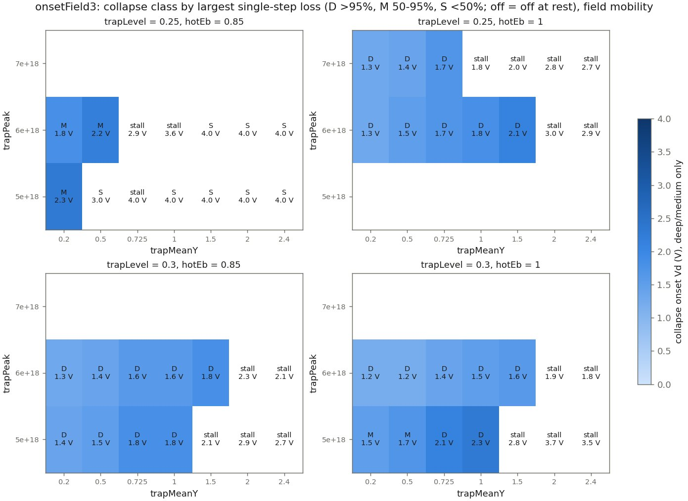
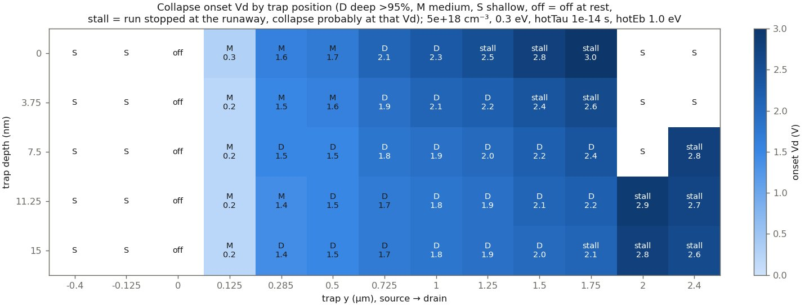
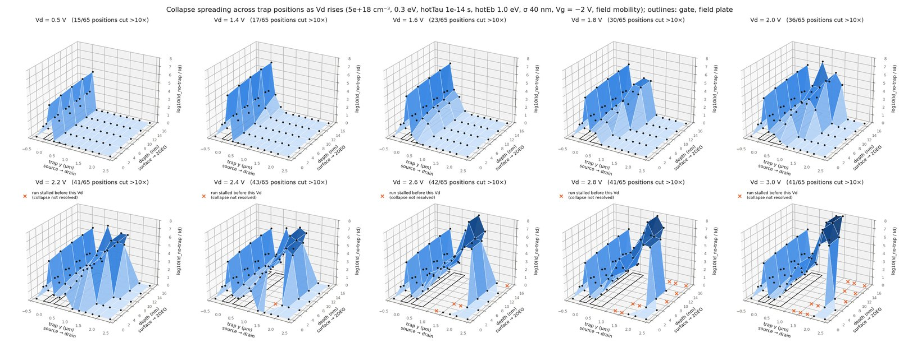
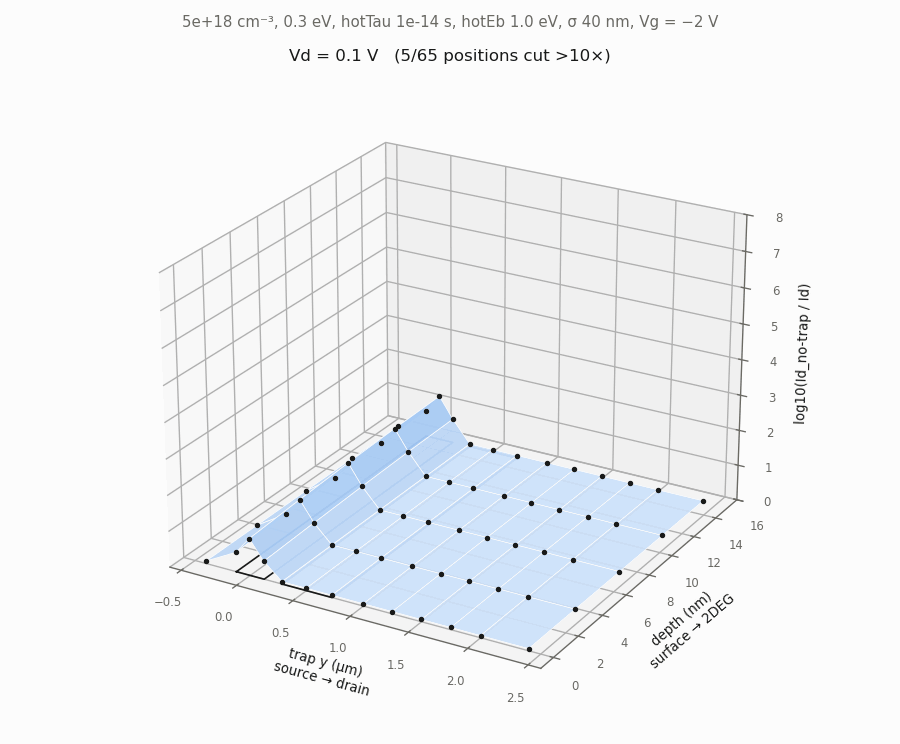
Oct 1 · Insulators, deep traps, the dielectric, and calibration
The busiest day: four model questions answered with static mobility, then the deck calibrated against measured data, the field mobility adopted, and the static work archived.
Done
- Full x–y trap map including charge in the passivation (339 devices). Filled nitride traps switch near-surface blobs off at rest; positive charge cancels the collapse; neutral traps restore it.
- Deep traps: thin blobs 25 nm or more below the 2DEG do nothing. The earlier "deep" collapse came from the wide blob's tail reaching the channel.
- HighK vs SiN passivation: identical collapse at Vd ≤ 3 V. HighK does flatten the field-plate field, but only above ~5 V.
- Calibration against the measured HfO₂ transfer curve (Vds = 10 V, 200 µm device): the existing field-mobility model fits within ±2.4% from Vg −2.6 to +1 V with no parameter changes.
- Run F map redone with field mobility: collapse earlier (0.2 V almost everywhere) and about 1 decade deeper.
- Archived all static-mobility work (folder plus branch
static-mobility); field mobility made the default;CLAUDE.mdcut from 651 to 276 lines.
Needed work
- openFraction of passivation traps that are filled. It decides between collapse, off-at-rest and no collapse for near-surface damage.
- openForward-bias gm too low (88 vs 160 mS/mm at +1 V). Interface charge, contact resistance and surface charge all fixed it only by worsening the −2 V region.
- openLow-Vd linear region not checked against data; a measured Id–Vd curve would cover it.
- notedOld
fieldpeak.tclset the HighK permittivity before loading the model file, so its "SiN" run was really HighK.
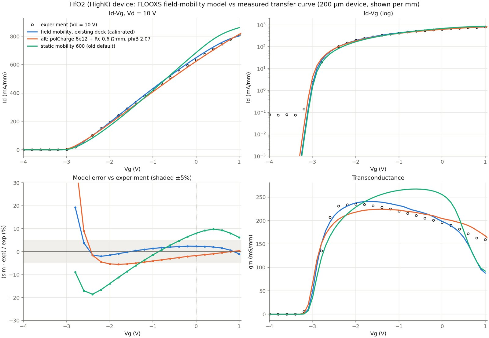
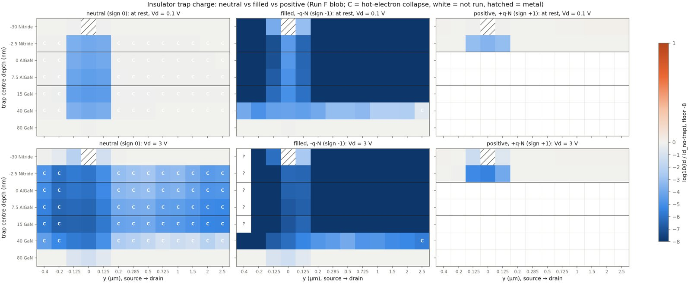
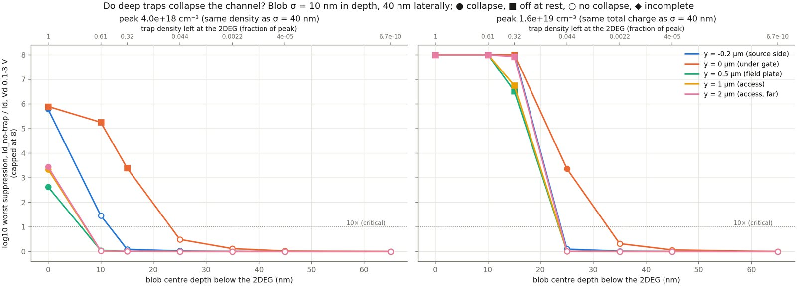
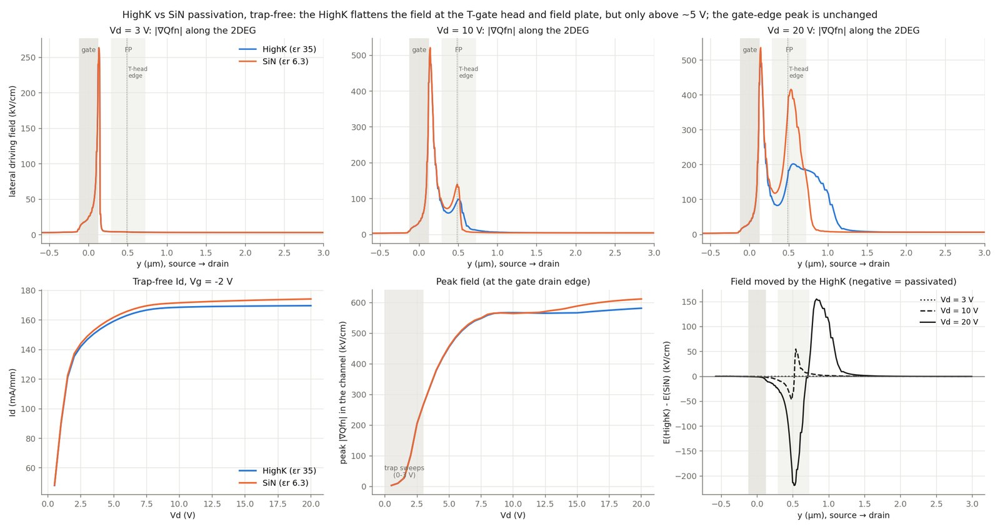
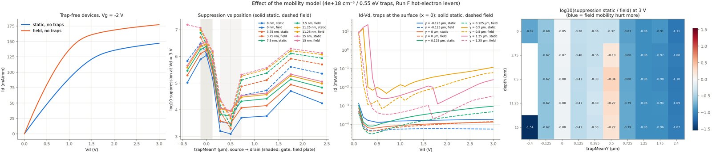
Sep 30 · Progress-report deck
Summarised the first week for a progress report.
Done
- 12-slide deck: problem, model,
radPlot1onset match, late-onset result, trap maps, regimes, trap shape, critical strike, crash fix, caveats, next steps. Open the deck - Added a Run F vs late-onset Id–Vd figure for it.
Needed work
- notedDeck numbers are static-mobility results; field mobility now collapses earlier and deeper.
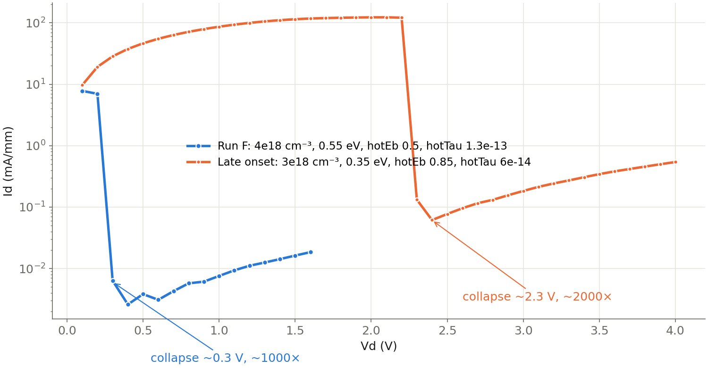
Sep 28 · Probability of a critical strike
How likely is at least one ion strike to land where its trap blob cuts the current 10× or more, at 1e7 ions/cm² on a 200 µm device?
Done
- Refined the critical-band edges (100 devices, 0 crashes): 0.30 µm (2e18/0.55) up to the whole 3.0 µm trusted range (4e18/0.55, 8e18/0.35).
- Expected critical strikes λ = 6 to 60; P(≥1) = 0.9975 to ≈1. 50% fluence 1.2e6 down to 1.15e5 ions/cm².
Needed work
- openThe 2D model spreads each blob over the full gate width. A real cascade damages ~0.16 µm of width, about 0.5–4.8% of the device in total, so device-level collapse needs a 3D run to judge.
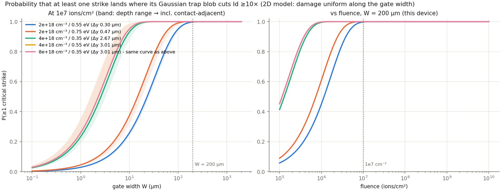
Sep 27 · Crash root cause, map sets, cone traps
Found why FLOOXS was crashing, made sweeps survive it, then ran the first crash-free maps.
Done
- Root cause of
munmap_chunk: Newton diverges to NaN at the collapse, leaves stale solver queues, and the exit then recurses ~3,300 times with a double free (1–2 GB cores). pulsedIV.tclnow catches a failed point, restores the last solution and bisects the Vd step. A patched FLOOXS build exists locally.- Five trap-map sets (251 devices): first sweep with zero crashes. The gate region is the most damaging location in every set.
- Collapse metric changed to depth vs the trap-free device; peak/min understated gate-edge collapses 8–10×.
- Cone-shaped (cascade-like) traps added as a switchable shape.
Needed work
- openAccess-region mesh (25–40 nm) can't resolve narrow traps. The cone results there were mesh artifacts; Gaussian onsets shift ~0.1 V on a 4 nm mesh.
- in progress8 devices stalled at the runaway even with 7 bisection levels; the same stall returned on Oct 2 and is being fixed now.
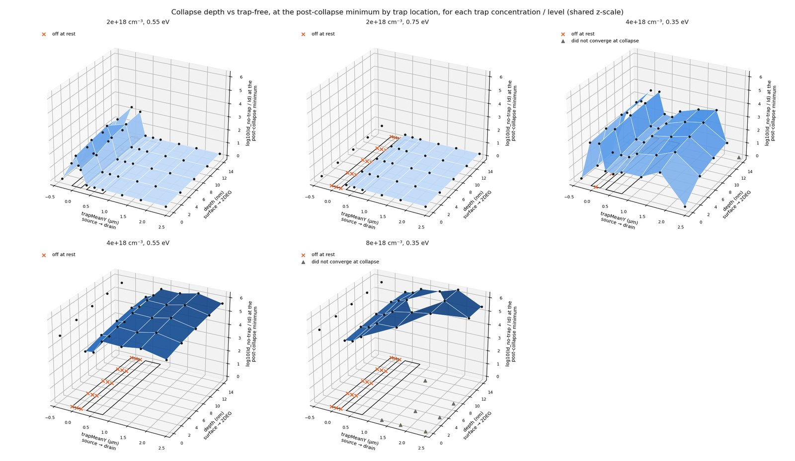
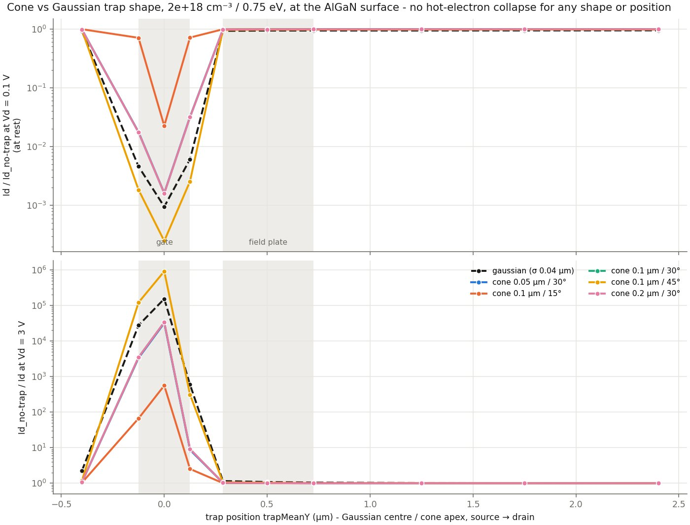
Sep 26 · Trap maps on the burst queue
First large maps on ee1-b: where a trap blob does the most damage, and how concentration and energy level set the regime.
Done
- 50-location map (49/50 complete): traps under the gate and at its drain edge are most damaging (~1e6× below trap-free); y = 2.5 µm least (~600×).
- Concentration × level × position (90 devices): three regimes — off at rest (deep levels or high density), hot-electron collapse (a narrow band), and no collapse (2e18 in the access region).
- Trap energy level matters more than concentration for which regime a device lands in.
Needed work
- fixedPeak/min "collapse ratio" can't see a device that's off at rest; added suppression vs trap-free (and an onset-unbiased depth metric on Sep 27).
- fixedTraps near the drain contact (y = 3.0 µm) looked contact-affected; later maps stay ≥ 0.7 µm from contact doping.
- noted3 of 90 devices undetermined after crashes.
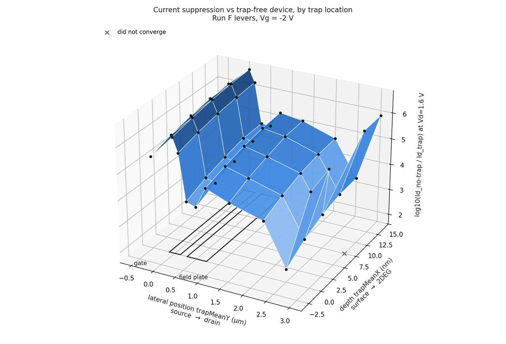
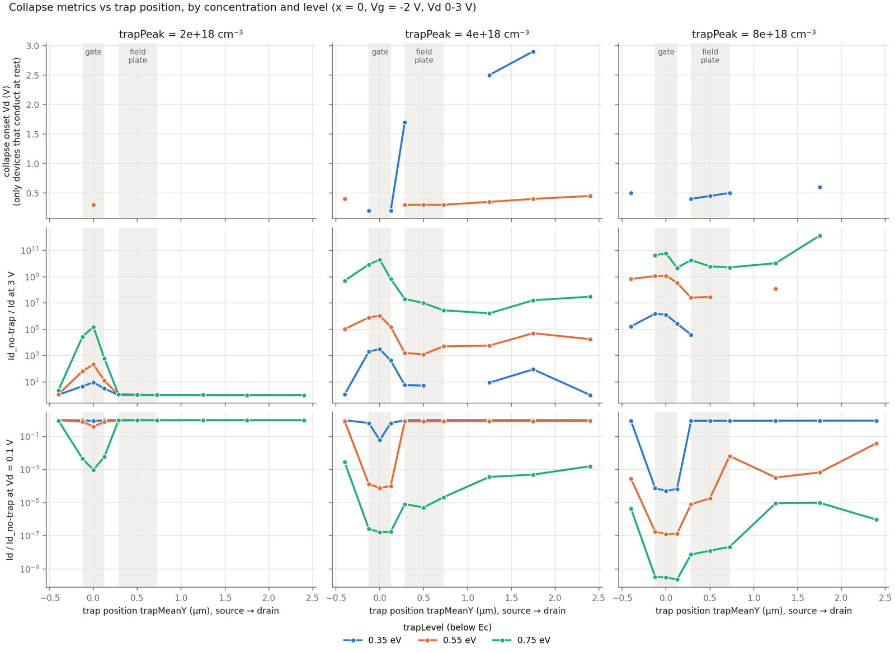
Sep 25 · Late onset to ~2.2 V, trap placement
Eight more search rounds found a trap set that collapses ~7× later than Run F, and moving the trap blob matched the measured 0.5 V onset.
Done
- A shallower trap level (0.35 eV) gave room to add charge without pinching the channel at rest;
hotEbturned out to be the strongest depth lever. - Accepted result: 3e18 / 0.35 eV / hotEb 0.85 / hotTau 6e-14 → onset ~2.2–2.3 V, ~2000× deep, then a slow creep.
- Trap placement (15 devices): a surface blob at y = 2.0 µm matched
radPlot1's 0.5 V onset and depth (0.020 vs 0.011 mA/mm).
Needed work
- fixed Sep 27
munmap_chunkcrashes lost 6–56% of each round; smaller steps and more damping didn't help. - acceptedOnset and depth move together: later onset costs depth. Stopped at ~2.2 V instead of the 3 V target.
- openThe
radPlot1match sags early at 0.4 V (20.6 vs 32.0 mA/mm), and a blob 2 µm into the access region needs a physical justification.
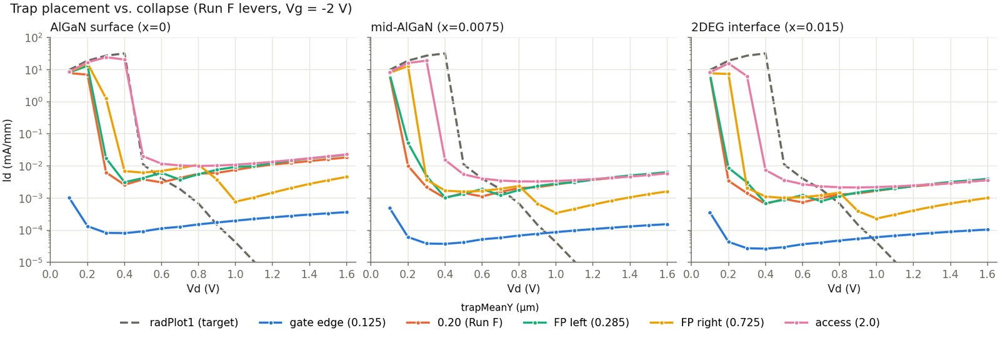
Sep 24 · HPG workflow and the first late-onset grid
Set up the sweep workflow on HiPerGator and tried to move Run F's collapse from 0.3 V to 3 V.
Done
- Sweep workflow on HPG: connection check, SLURM array template, per-task parameters and
params.json; driver levers made overridable. - Local probes: lowering hotTau alone doesn't delay the collapse. At 1.3e-15 s nothing happens (peak Te 353 K); at 1e-14 s only a 1.5× sag.
- Round A (9 devices): trap density {4, 6, 8}e18 × hotTau {1, 0.7, 0.5}e-14.
Needed work
- fixed Sep 25No match: 4e18 never collapsed, and 6–8e18 pinched the channel at rest. A shallower trap level solved this the next day.
- notedThe "onset ∝ 1/√hotTau" trend fitted near Run F doesn't hold far from it.
Sep 22–23 · Repository setup
Before the progress log started.
Done
- Repository created with the FLOOXS device decks, model files and plotting notebook.
- Trap parameters, RF device drivers and figure data updated; Run F (4e18 / σ 40 nm / 0.55 eV) became the reference trap set.
Needed work
- fixedA sign bug had put empty traps into Poisson as negative charge, so trapping fed on itself. Fixed before the sweeps began; only the onset and depth of the old
radPlotcurves are targets.